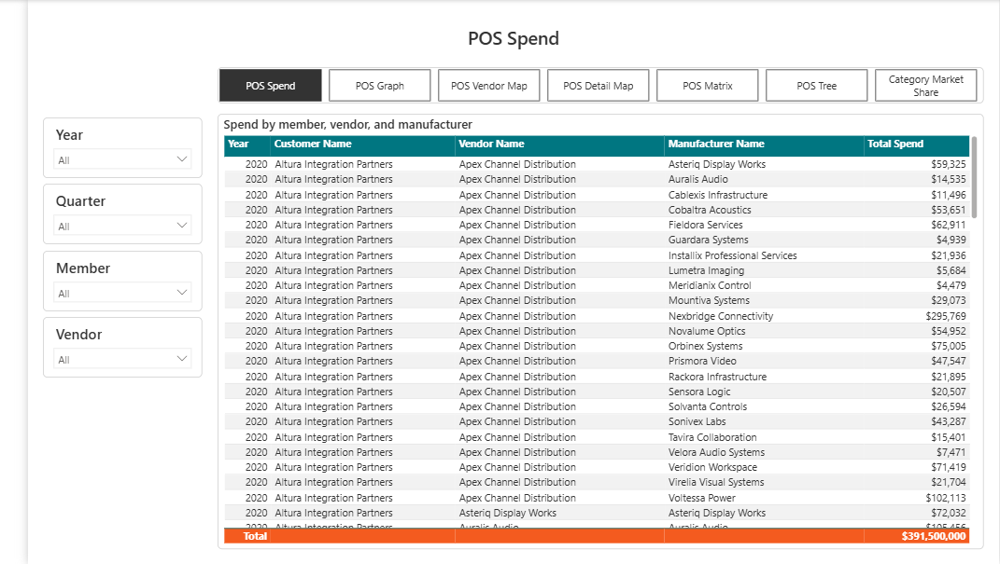
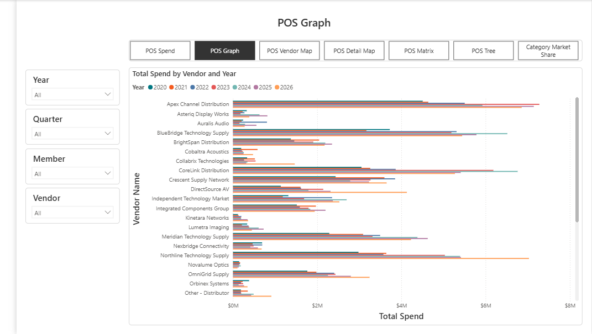
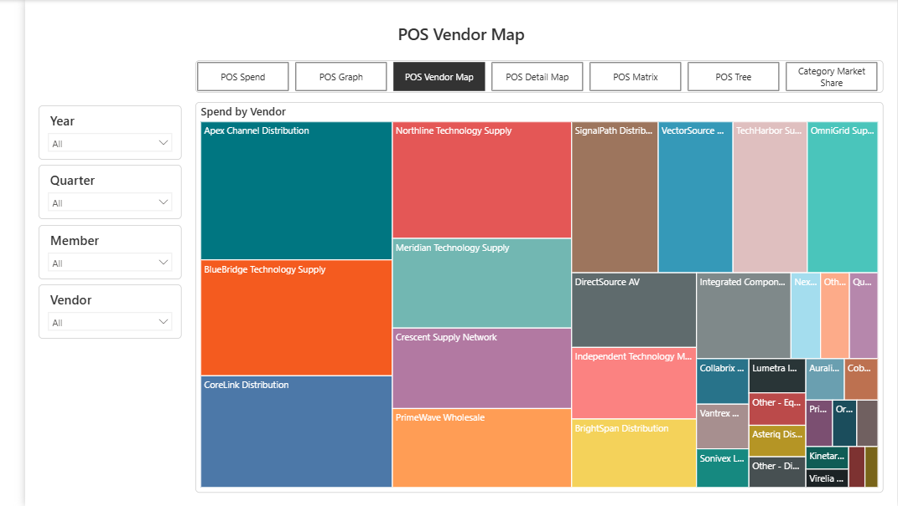
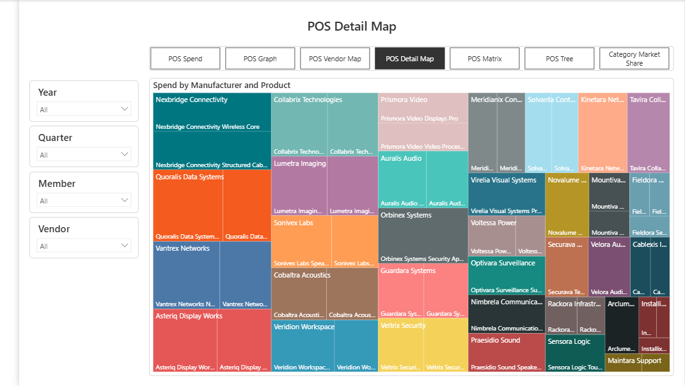
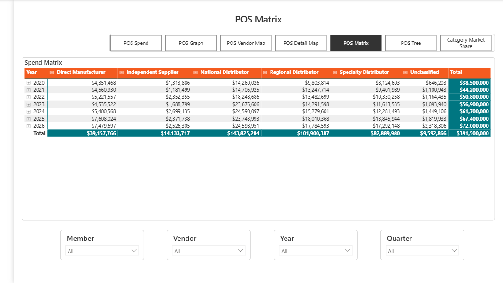
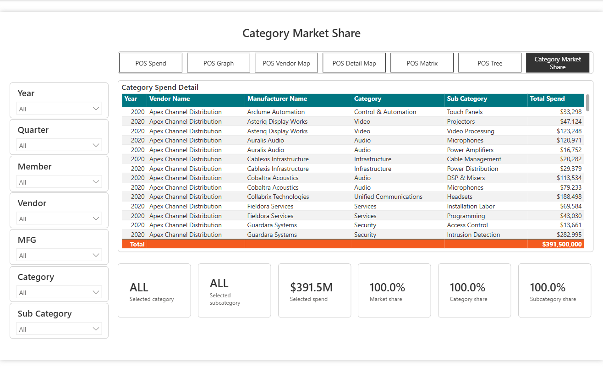

Power BI analytics
Channel Spend Analytics
A seven-page POS spend report designed to reveal channel capture, outside-channel purchasing, share-of-wallet opportunity, and the vendors and manufacturers driving customer spend.
- Role
- Business intelligence developer and report designer
- Tools
- Power BI, Power Query, DAX, and dimensional modeling
- Portfolio data
- Fully synthetic customer, vendor, manufacturer, product, and spend data

The challenge
Turn transaction detail into actionable channel opportunity.
POS data can show what customers purchased, but the commercial question is larger: how much spend is captured through the channel, where customers buy outside it, and which gaps represent realistic share-of-wallet opportunity.
The report needed to support several paths through the same data, from annual vendor trends and detailed transaction views to category mix, manufacturer concentration, and customer-level spend drivers.
The solution
One model, seven connected analytical views.
I structured the experience around consistent navigation and shared slicers so users can move between summary, trend, hierarchy, and detail views without changing the analytical context.
- Member, vendor, manufacturer, category, subcategory, year, and quarter filtering
- Vendor trend analysis across 2020 through 2026
- Treemaps for vendor concentration and manufacturer-product mix
- A matrix view comparing spend across vendor classifications
- A decomposition tree for drilling from category to customer-level drivers
- Market share cards that respond to the current category and subcategory context
My contribution
From business question to interactive report.
I translated the spend-analysis requirements into the report structure, analytical model, measures, slicers, drill paths, page navigation, and visual hierarchy. The portfolio edition recreates that work with fictional entities and a synthetic transaction model.
The demonstration dataset covers 2020 through 2026 and totals $391.5 million. Names are fictional and figures are synthetic, while the dimensions, relationships, and analysis patterns are designed to reflect a realistic POS channel-spend scenario.
Report walkthrough
Seven views of the same spend story
Every screen below is rendered from the portfolio-safe Power BI report. All displayed organizations and products are fictional.






Portfolio note